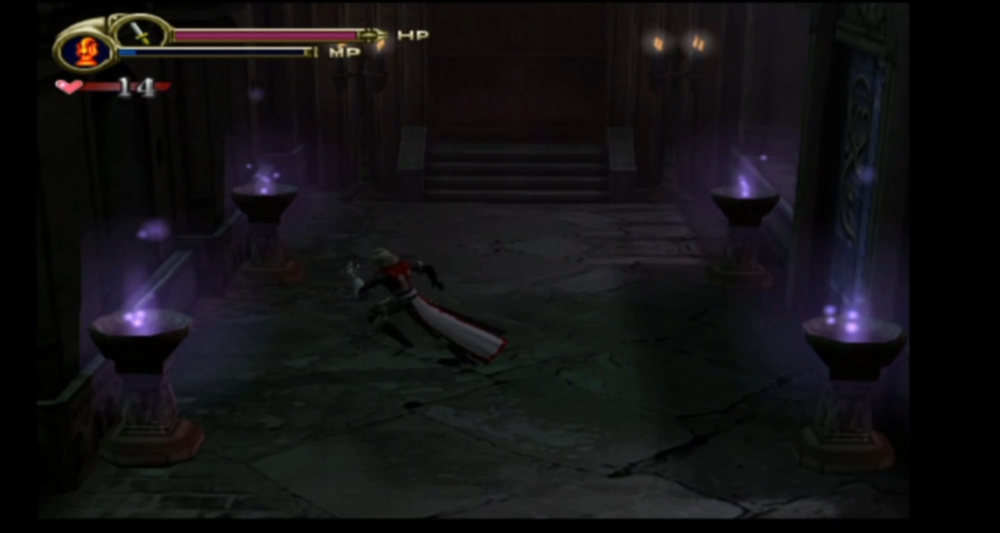
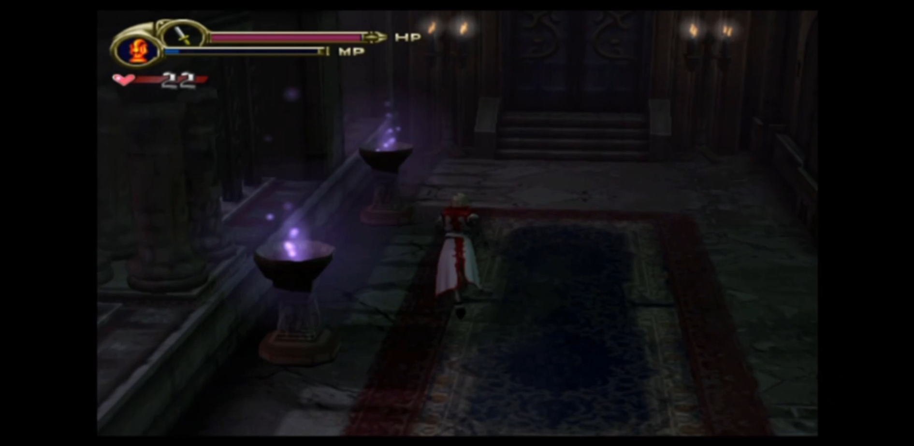
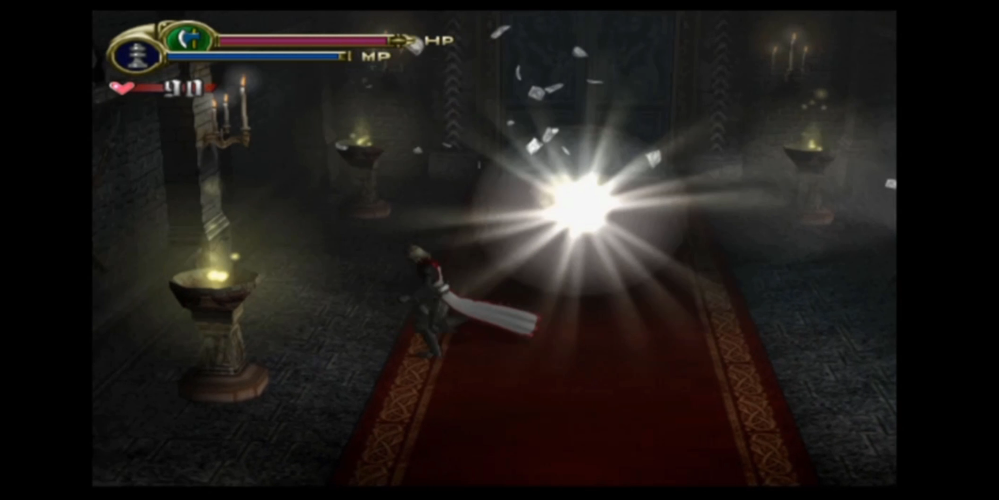
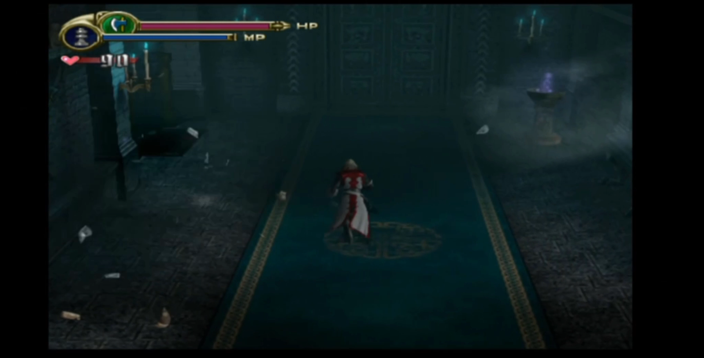
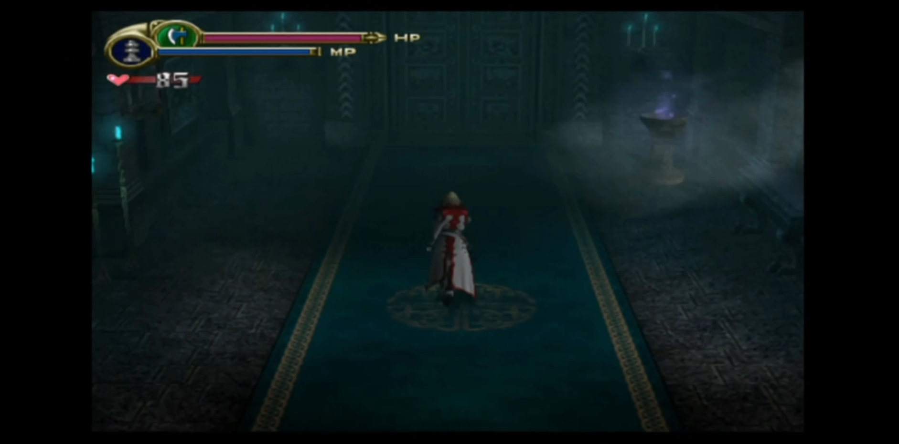

Understanding the Mechanics
I. Preface
LOI deviates from Symphony of the Night's formula into a more arcade-style action game, and explains how the struggle between Dracula and the Belmont family first started. Leon Belmont, a renowned knight of an undefeated company, has his betrothed abducted by a powerful vampire who is the master of his own castle. Leon gives up his title to pursue the vampire.
II. Skills
Skills are whip combos that Leon can do to perform damaging attacks, or to provide a means of evasive actions . Most of these skills can only be unlocked after certain conditions have been met, such as using a previous skill a given number of times, or after a certain enemy or number of enemies have been defeated, etc. Execute a second Quick Step after completing the first one, or learn to Perfect Guard from attacks.
The ones that are bold are the ones you are typically going to obtain in Any%
| Skill | Total enemies defeated | Special requirement |
|---|---|---|
| Extension | 20 | Defeat 5 different kinds of enemies |
| Draw Up | 150 | Defeat 30 different kinds of enemies |
| Vertical High | 180 | Defeat 35 different kinds of enemies |
| Rising Shot | 400 | Defeat 50 different kinds of enemies |
| Fast Rising | 1,000 | - |
| Spinning Blast | 600 | Defeat 65 different kinds of enemies |
| Energy Blast | 525 | Defeat 55 different kinds of enemies |
| Sonic Edge | 1,250 | Defeat 70 different kinds of enemies or perform 100 continuous Perfect Guards |
| Extension 1 | 40 | Defeat 10 different kinds of enemies |
| Extension 2 | 80 | Defeat 20 different kinds of enemies |
| Step Attack | 230 | Defeat 40 different kinds of enemies and perform Quick Step more than 100 times. |
| Falcon Claw | 300 | Defeat 45 different kinds of enemies. |
| Quick Step | 3 | Defeat 1 kind of enemies |
| Quick Step 2 | 110 | Defeat 25 different kinds of enemies |
III. Item Duplication
This one's fairly simple. Stand in the correct place and hover over your items. The "correct place" seems to be limited to very specific hallway types, only seen in certain areas of the castle.
- There's two in the Castle Entrance, one each in the east and west hallways
- There's three in Garden Forgotten by Time, two in the hallways connecting the square of rooms in the southern section, and one in the hallway leading to the switch in the southeast section
- There's four in Pagoda of the Misty Moon 1F, one in every hallway except the one leading to 2F.
- There's five in Pagoda of the Misty Moon 2F, one in each hallway connecting to the Candle Room, and one in each of the long hallways





Duping items allows you to keep a full stock of extremely broken items that were never intended to be used in mass quantities. However, Item Duplication can’t performed in PAL version
VI. Action Canceling
This can also be used to cancel into other things, such as jumping, using items, and subweapons. There's a small window during (almost) every action where you can start another action before the current action's animation finishes. Doing this immediately cancels whatever action you're currently in the middle of and begins the next one. Not everything can be canceled into though. Whips can only be canceled into Subweapons and jumps, but not items. Subweapons can be canceled into anything, and items can be canceled into anything most of the time. It seems to depend on what item is being used. Jumping can't be canceled per se, but the moment you land you can start another action immediately.
This technique is extremely important since the way that Combo Damage works is that every hit beyond the first adds roughly 5% damage. This means that high combos have the ability to increase damage to levels that are completely broken. In most boss fights you try and keep the combo going for as long as possible.
VII. Gems
Thanks to item duplication, the jewel crusher is the core of this run. It destroys Jewels and releases their hidden magical potential. When equipped, the description of the Jewels changes as follows:
- Diamond - Grants a full HP, MP and Heart restore.
- Ruby - Deals 119 damage to everything in the room. Can be mitigated by special defense, and won't affect anything that's immune to damage at the time.
- Ruby - Deals 50 damage to everything within view, and restores 8 HP for every hit. Can be mitigated by special defense.
- Turquoise - Randomly changes the sub weapon to something that's not the current subweapon.
All of these gems are vital to a run. Rubies destroy entire rooms with impunity, and make good combo extenders in boss fights. Sapphires make decent substitutes for Rubies when you need to conserve them. Diamond allow you to spam Hi-Speed Edge continuously to get around faster. Turquoise make it possible to have the optimal sub weapon for every situation.
VIII. Subweapons
Every sub weapon is used but not every orb combination is:
- Axe - Important in Garden Forgotten by Time, and against Medusa.
- Spiral Axe - Used twice in House of Sacred Remains, Primarily to conserve the gems.
- Wind Axe / Axe Tornado - Used to take down ogers Cyclops and setup in the first room for Dark Palace of the Waterfall.
- Hi-Speed Edge - Used everywhere after the Green Orb is obtained. Fastest form of movement in the game. Roughly 50% faster than walking ~ DragonDarchSDA
- Spirit Ripper - Used against Walter to get a high combo.
- Michael's Sword - Used twice in Dark Palace to deal with enemies and once in Anti-Soul Mysteries Lab. Primary damage source against Joachim and core on golem’s second phase before the ruby spam.
- Holy Light - Used against Golem phase 1. Keeps him constantly going in and out of his guard stance, and does significant damage due to double hits.
- Satellite - Used against Doppelganger 2 to keep him stunlocked.
- Roaring Flames - Used for Undead Parasite phase 2. Hits 4 times and allows just enough time to cancel into a whip without dropping combo.
- Cross Blazer - Used for Undead Parasite phase 1 since it allows you to hit 2 eyes at once. Can also be used against doppleganger 2 for safer option.
- Force Cannon - Used against Succubus, and the Ogre duo outside of her room.